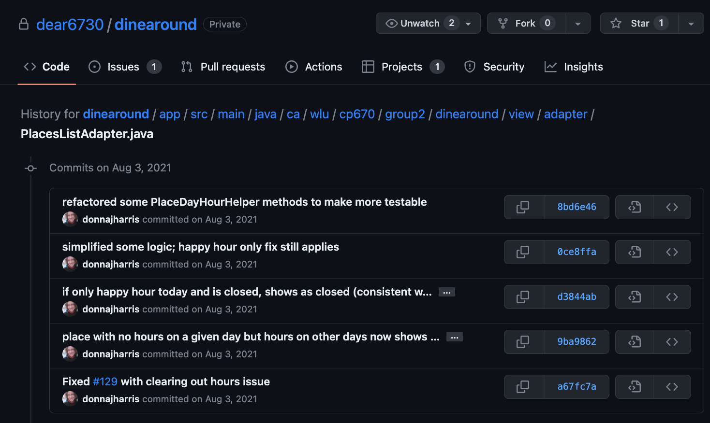

Developing Dine Around

Dine Around was built as an Android development course final project. Our team of five built an app for tracking favourite restaurants, coffee shops, and bars.
My responsibilities and my confidence grew throughout the duration of the project.
I volunteered to take care of the app logo (created by combining and editing two Ballicon icons), which proved to be a precursor to handling the design and implementation of the app's lists of "Places" and "Favourite Places".
With guidance from a professionally experiened developer on the team, I got my feet wet with developing the main list of places. And then, I was able to really make both the design layout and the implementation my own, with regular feedback from the team.
I was able to successfully build out my features with the knowledge of other components that needed to integrate. We were able to work together to connect pieces and troubleshoot issues.
PlacesListAdapter
- Code Examples:
- PlacesListAdapter.java
- place_item.xml
All Places: These sample "All Places" lists show restaurants, coffee shops, and bars with various metadata, including ratings and favourites, open status and distance, if nearby.


place_item.xml defines the card layout for the All Places and Favourite Places lists. This screenshot of VS Code shows the XML file and resulting card layout using sample text.


